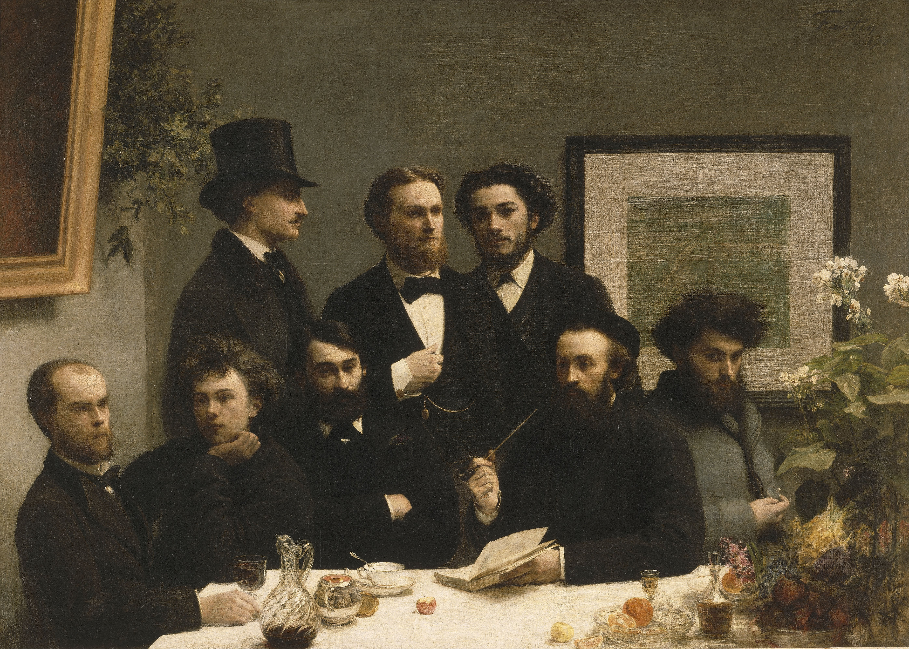
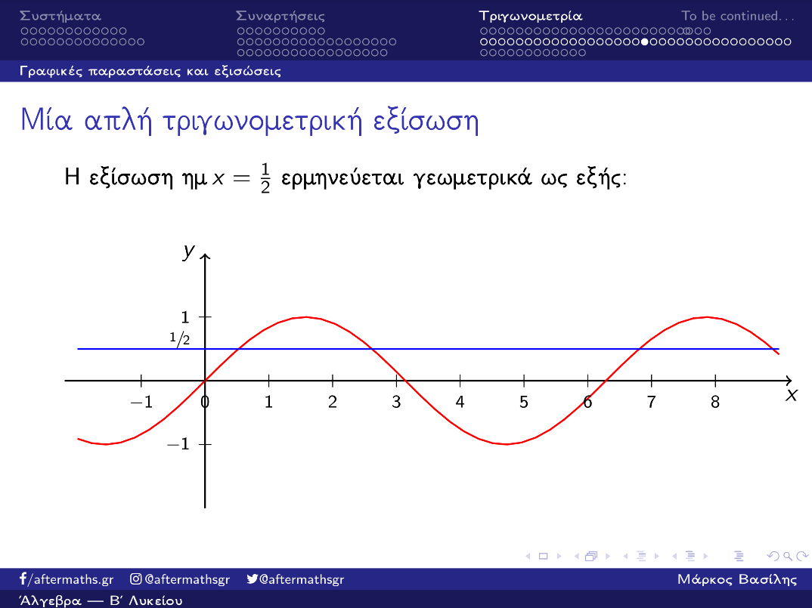
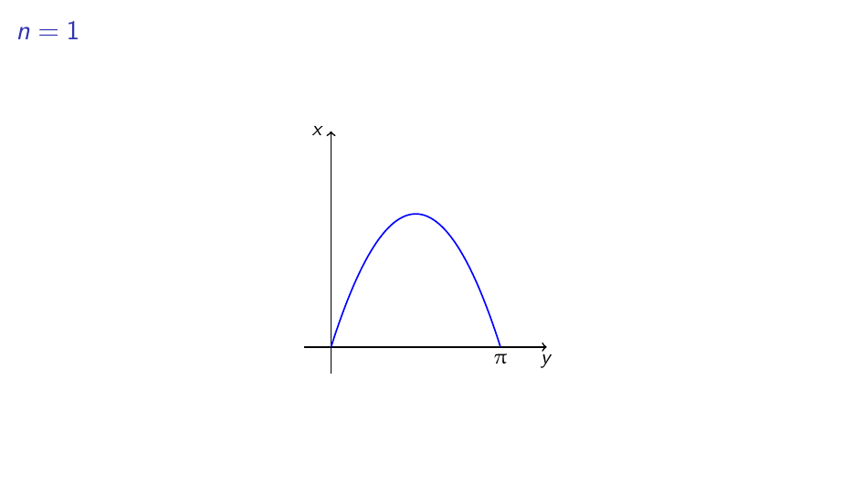
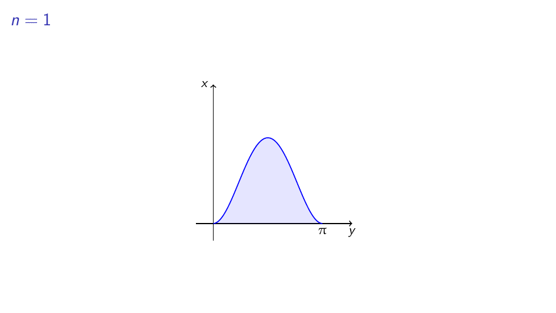

Το ημίτονο, οι άρρητοι και οι πιο… άρρητοι#

Ο πίνακας Στο τραπέζι του Henri Fantin-Latour.#
Η αλήθεια είναι ότι για αυτήν την Κυριακή ήταν προγραμματισμένη μία άλλη ανάρτηση, ωστόσο μέσα στην εβδομάδα προέκυψε μία ιδιαίτερα ενδιαφέρουσα συζήτηση στην τάξη - έστω και ψηφιακή. Στα πλαίσια μίας βιαστικής επανάληψης στην τριγωνομετρία, συζητήθηκε η ακόλουθη πεζή και απλή διαφάνεια - όλο το σετ διαφανειών μπορείτε να το βρείτε εδώ:

Τι πιο απλό για ένα μάθημα τριγωνομετρίας από μία τριγωνομετρική εξίσωση;#
Εκεί πάνω που συζητούσαμε για τις τριγωνομετρικές εξισώσεις, ένας μαθητής ρωτάει:
Μαθητής: Κύριε, δεν είναι πολύ σπαστικό αυτό που γίνεται με τη γραφική παράσταση του ημιτόνου;
Εγώ: Τι εννοείς;
Μ: Αυτό… που δεν πέφτει πάνω σε ακεραίους όταν χτυπάει τον άξονα \(xʹx\) .
Ε: Α, ναι, αυτό έχει να κάνει με τις ρίζες της \(\sin x=0\) …
Μ: Ναι, το ξέρω, απλά είναι κακό που δεν έχει στρογγυλές ρίζες. Αυτό συνεχίζεται για πολύ;
Ε: Εννοείς, αν τέμνει ποτέ σε ακέραιο τον οριζόντιο άξονα;
Μ: Ναι, ναι.
Ε: Εεεε, βασικά, για πάντα έτσι θα κάνει, ποτέ δεν πέφτει σε ακέραιο.
Μ: Και γιατί αυτό;
Κάπου εδώ θα σταματήσει η παράθεση του διαλόγου γιατί θα πάει όλη η ανάρτηση έτσι στο τέλος. Ωστόσο, πράγματι, πού ξέρουμε ότι δε θα έχει ποτέ ακέραια ρίζα το ημίτονο;
Η αρρητότητα του π#
Ας βάλουμε τα πράγματα σε μία σειρά, σιγά-σιγά. Αρχικά, να θυμηθούμε ότι οι ρίζες της \(\sin x=0\) είναι οι:
Με άλλα λόγια, οι ρίζες του ημιτόνου είναι όλα τα ακέραια πολλαπλάσια του \(\pi\) - που γιορτάζει και σήμερα. Αν λοιπόν κάποιο πολλαπλάσιο του \(\pi\) ήταν μη μηδενικός ακέραιος αριθμός, έστω \(n,\) τότε θα έπρεπε να έχουμε:
Δηλαδή, ο \(\pi\) θα έπρεπε να είναι ρητός, πράγμα που είναι άτοπο, καθώς ο \(\pi\) είναι άρρητος!
Βασικά, κι από πού ξέρουμε ότι ο \(\pi\) είναι άρρητος; Σίγουρα έχετε ακούσει για τα περιβόητα «άπειρα δεκαδικά ψηφία του \(\pi\) » αλλά πού ξέρουμε ότι, πράγματι, είναι άπειρα - ή ότι δεν επαναλαμβάνονται; Τα βρήκαμε μήπως και τα γράψαμε ένα προς ένα στο χαρτί; Προφανώς και όχι. Επομένως, πώς το ξέρουμε αυτό με τόση βεβαιότητα;
Η αλήθεια είναι ότι ο μόνος τρόπος για να επιβεβαιώσουμε κάτι τέτοιο είναι να το αποδείξουμε. Ιστορικά, έχουν δοθεί πολλές - πάρα πολλές - αποδείξεις περί της αρρητότητας του αριθμού \(\pi\) , όλες σχετικά πρόσφατες - από τον 18ο αιώνα κι ύστερα. Ωστόσο, εδώ θα παρουσιάσουμε μία παραλλαγή της απόδειξης του Ivan Niven, που είναι πολύ σχετική με την ερώτηση του παραπάνω μαθητή στην τάξη.
Η κεντρική ιδέα της απόδειξης του Niven περί της αρρητότητας του \(\pi\) είναι το γεγονός ότι ο \(\pi\) είναι η μικρότερη θετική ρίζα της συνάρτησης \(\sin x\) . Η αλήθεια είναι ότι αυτό είναι ένας πολύ παράξενος τρόπος για να περιγράψει κανείς το \(\pi\) - ίσως και όχι - αλλά η απόδειξή του δουλεύει αρκετά καλά γύρω από αυτήν την ιδέα.
Όπως θα φαντάζεστε, η απόδειξη γίνεται με απαγωγή σε άτοπο, καθώς ένας πραγματικός αριθμός είναι άρρητος εξ ορισμού όταν δεν είναι ρητός. Έστω, λοιπόν, προς άτοπο, ότι ο \(\pi\) είναι ρητός και, για την ακρίβεια, έστω ότι \(\pi=\frac{a}{b}\) , για κάποια \(a,b\in\mathbb{Z}\) . Για την ακρίβεια, για να κάνουμε τη ζωή μας πιο εύκολη, θα υποθέσουμε ότι \(a,b>0\) , δεδομένου ότι ο \(\pi\) είναι θετικός - και αρνητικός να ήταν, δε θα άλλαζε κάτι στα παρακάτω. Τώρα, με αυτό το δεδομένο στα χέρια μας θεωρούμε τις εξής συναρτήσεις, που θα μας φανούν πολύ χρήσιμες:
Ωραία, και τι σχέση έχουν αυτές με το \(\pi\) ή με το ημίτονο; Φαινομενικά, μάλλον καμία. Ωστόσο, ας δούμε λίγο πιο προσεκτικά τις παραπάνω συναρτήσεις. Παρατηρούμε, για αρχή, ότι καθεμία από αυτές έχει ακριβώς δύο ρίζες: το \(0\) και το \(\frac{a}{b}\) , δηλαδή το \(\pi\) . Επομένως, έχουν ήδη ένα κοινό με το \(\sin x\) στο \([0,\pi]\) , καθώς έχουν τις ίδιες ρίζες. Ωστόσο, δεν είναι μόνο αυτό. Όπως εύκολα βλέπει κανείς, οι \(f_n\) είναι θετικές στο \((0,\pi)\) , ακριβώς όπως και το ημίτονο. Αν παρατηρήσουμε και λίγο τη μορφή τους θα δούμε ότι «φέρνουν» κάπως στο ημίτονο - εντάξει, όχι τελείως, αλλά κάτι γίνεται:

Ε, εντάξει, μπορεί να πέφτει λίγο, να χάνει και στην κυρτότητα, αλλά «φέρνει» σε ημίτονο…#
Αν εξαιρέσει κανείς ότι καθώς το \(n\) μεγαλώνει απεριόριστα η γραφική παράσταση «πέφτει» στο διάστημα \([0,\pi]\) , κάπως θυμίζει ημίτονο. Αυτό που εμάς θα μας φανεί χρήσιμο, ωστόσο, δεν είναι οι \(f_n\) καθεαυτές, αλλά το ακόλουθο ολοκλήρωμα:
Σχηματικά, αυτό αντιστοιχεί στα παρακάτω εμβαδά:

Τα εμβαδά, όπως αναμενόταν, πέφτουν.#
Αυτό που βλέπουμε στο παραπάνω σχήμα, μπορούμε να το αποδείξουμε και αυστηρά. Για την ακρίβεια, άμεσα έχουμε ότι \(f_n(x)\sin x>0\) για κάθε \(x\in(0,\pi)\) , επομένως \(I_n>0\) για κάθε \(n=1,2,\ldots\) Επίσης, παρατηρούμε ότι για κάθε \(x\in[0,\pi]\) έχουμε:
Η πρώτη ανισότητα είναι άμεση, ενώ για τη δεύτερη παρατηρούμε ότι:
Τώρα, παρατηρούμε ότι:
συνεπώς η γραφική παράσταση της \(f_n\) είναι συμμετρική ως προς την ευθεία \(x=\frac{\pi}{2}\) . Συνεπώς, δεδομένου ότι η \(f_n\) είναι συνεχής στο \([0,\pi]\) για κάθε \(n\) , θα παίρνει εκεί μία μέγιστη τιμή. Επειδή τώρα είναι θετική στο εσωτερικό του εν λόγω διαστήματος και \(f_n(0)=f_n(\pi)=0\) έπεται ότι θα παίρνει τη μέγιστη τιμή της, λόγω συμμετρίας, στο \(\frac{\pi}{2}\) - εδώ κλέψαμε λίγο κάποιες πράξεις, αλλά μία παραγώγιση μπορούμε να την παραλείψουμε με ασφάλεια.
Υπολογίζουμε, τώρα το \(f(\frac{\pi}{2}):\)
Τώρα, θέτοντας για ευκολία \(c=\frac{a^2}{4b}\) παρατηρούμε ότι η ακολουθία \(\frac{c^n}{n!}\to0\) - για παράδειγμα, χρησιμοποιώντας το κριτήριο του λόγου. Επομένως, έχουμε άμεσα και \(I_n\to0\) , άρα πράγματι τα παραπάνω εμβαδά, τελικά, καταρρέουν προς το μηδέν.
Ως εδώ, τίποτα το παράξενο, είναι η αλήθεια. Πήραμε κάποιες συναρτήσεις, τις πολλαπλασιάσαμε με το ημίτονο και αποδείξαμε ότι κάτι ολοκληρώματα τελικά τείνουν προς το μηδέν. Από τις υποθέσεις μας, το μόνο που αξιοποιήσαμε, ως τώρα, είναι το γεγονός ότι ο \(\pi\) είναι η μικρότερη θετική ρίζα του ημιτόνου. Πράγματι, αυτό το χρησιμοποιήσαμε σιωπηλά όταν είπαμε ότι \(f_n(x)\sin x>0\) στο \((0,\pi).\) Σε εκείνο το σημείο, δεδομένου ότι \(f_n(x)>0\) , αυτό που χρησιμοποιήσαμε ήταν ότι το \(\sin x\) διατηρεί πρόσημο στο \((0,\pi)\) . Αυτό έπεται άμεσα από το γεγονός ότι η \(\sin x\) είναι συνεχής και άρα θα διατηρεί πρόσημο ανάμεσα σε δύο διαδοχικές ρίζες της - εν προκειμένω, ανάμεσα στο \(0\) και στο \(\pi.\)
Πέρα από αυτό, όμως, το πολυπόθητο άτοπο δε φαίνεται να έρχεται. Διότι, ως τώρα, έχουμε μία ακολουθία ολοκληρωμάτων η οποία συγκλίνει «φυσιολογικά» στο μηδέν. Ωστόσο, όπως θα δούμε αμέσως, υπό την προϋπόθεση ότι ο \(\pi\) είναι ρητός, αυτό δεν είναι εφικτό!
Αρχικά, επιλέγουμε κάποιον \(n\in\mathbb{N}\) και θεωρούμε τη συνάρτηση:
Αυτή μπορεί να μοιάζει με μία ακόμα συνάρτηση που βγάλαμε από το καπέλο, αλλά δεν είναι. Η παραπάνω συνάρτηση, χρησιμοποιείται για να συντομεύσει την εφαρμογή πολλαπλών παραγοντικών ολοκληρώσεων. Για την ακρίβεια, κάνοντας \(2n\) ολοκληρώσεις κατά παράγοντες, έχουμε:
Για να δούμε καλύτερα το πώς προκύπτει το παραπάνω - πέρα από μία τυπική απόδειξη με επαγωγή - μπορούμε να παρατηρήσουμε ότι:
για κάθε συνάρτηση \(g\) που είναι δύο φορές παραγωγίσιμη με ολοκληρώσιμη δεύτερη παράγωγο. Τώρα, χρησιμοποιώντας την \(F_n\) αντί για εκείνο το περίπλοκο άθροισμα, η παραπάνω σχέση γράφεται:
Ωστόσο, αν κοιτάξουμε λίγο παραπάνω, θα δούμε ότι η \(f_n\) δεν είναι παρά μία πολυωνυμική συνάρτηση βαθμού \(2n\) , συνεπώς, η τάξεως \(2n+2\) παράγωγός της θα είναι μηδενική. Επομένως:
Έτσι, μελετώντας τις συναρτήσεις \(F_n\) για τις διάφορες τιμές του \(n\in\mathbb{N}\) θα μπορέσουμε να βγάλουμε ενδιαφέροντα συμπεράσματα για τα ολοκληρώματα \(I_n\) - που ελπίζουμε να αντιφάσκουν με το γεγονός ότι \(I_n\to0\) .
Θα ασχοληθούμε πρώτα με το \(F_n(0)\) , το οποίο είναι ίσο με:
Εδώ θυμόμαστε ξανά ότι η \(f_n\) είναι ένα πολυώνυμο βαθμού \(2n\) με παράγοντα το \(x^n\) , άρα έχει το μηδέν ως ρίζα και μάλιστα πολλαπλότητας \(n\) . Αυτό σημαίνει ότι οι πρώτες \(n-1\) παράγωγοι της \(f_n\) έχουν επίσης ως ρίζα το μηδέν, συνεπώς \(f_n^{(k)}{0}=0\) για κάθε \(k=0,1,2,\ldots,n-1.\) Επομένως, έχουμε ήδη απλοποιήσει τη δουλειά μας - μέχρι έναν βαθμό. Τώρα, παρατηρούμε ότι η \(F_n\) είναι πολυωνυμική συνάρτηση βαθμού \(2n\) - αφού και η \(f_n\) είναι πολυωνυμική συνάρτηση - επομένως το \(F(0)\) - δηλαδή, ο σταθερός όρος της \(F\) - θα είναι ίσος με το άθροισμα των σταθερών όρων των \(f_n^{(2k)}(x)\) για \(k=0,1,2,\ldots,n\) . Όπως είδαμε και παραπάνω, για \(2k<n\) δεν έχουμε να ανησυχούμε, καθώς οι εν λόγω σταθεροί όροι είναι όλοι τους μηδέν. Τώρα, για \(2k\geq n\) ας σκεφτούμε λίγο πώς προκύπτει ο σταθερός όρος της παραγώγου τάξης \(2k\) ενός πολυωνύμου. Ας πάρουμε για παράδειγμα το πολυώνυμο:
και ας υπολογίσουμε την τρίτη του παράγωγο:
Πρακτικά, με κάθε πααραγώγιση όλοι οι όροι μικραίνουν κατά μία δύναμη και ο προηγούμενος σταθερός όρος εξαφανίζεται. Έτσι, μετά από τρεις παραγωγίσεις ο συντελεστής του όρου που αρχικά ήταν τριτοβάθμιος τώρα θα είναι πλέον ο σταθερός όρος της τρίτης παραγώγου. Για την ακρίβεια, επειδή σε κάθε παραγώγιση ο όρος αυτός θα πολλαπλασιάζεται και με τον εκθέτη του \(x\) που έχει δίπλα του, επομένως, στο παράδειγμά μας, θα έχει πολλαπλασιαστεί τελικά με τον \(3\cdot2\cdot1=3!\) .
Γενικότερα, λοιπόν, αν \(p_k\) είναι ο συντελεστής του \(x^k\) αν αναπτύξουμε την \(f_n\) σε δυνάμεις του \(x,\) τότε ο σταθερός όρος της \(f_n^{(k)}\) θα είναι o \(k!p_k.\) Επομένως, για να βρούμε τους πολυπόθητους σταθερούς όρους \(f_n^{(2k)}(0)\) θα πρέπει να βρούμε τους όρους των δυνάμεων του \(x^k\) στο ανάπτυγμα της \(f_n.\) Παρατηρούμε, λοιπόν, χρησιμοποιώντας το διωνυμικό ανάπτυγμα, ότι:
Επομένως, ο πολυπόθητος συντελεστής μας είναι ο:
όπου για συντομία θέσαμε \(M_{k,n}:=\binom{n}{k}a^kb^{n-k}.\) Συνεπώς, ο πολυπόθητος σταθερός όρος της \(k-\) οστής παραγώγου, για \(k\geq n\) είναι ο:
Ας τον παρατηρήσουμε τώρα λίγο. Αρχικά, ο \(M_{k,n}\) είναι ακέραιος, αφού είναι το γινόμενο ενός διωνυμικού συντελεστή - που είναι πάντοντε ακέραιος - με δύο δυνάμεις ακεραίων - που είναι, σαφώς, ακέραιες. Έπειτα, επειδή \(k\geq n\) , έπεται ότι το \(n!\) διαρεί το \(k!\) , επομένως και ο \(k!/n!\) είναι ακέραιος. Άρα, ο \(f_n^{(k)}(0)\) είναι ακέραιος για κάθε \(k\geq n\) και \(0\) για \(k=0,1,2,\ldots,n-1.\) Συνεπώς, και ο \(F_n(0)\) είναι ακέραιος, ως άθροισμα ακεραίων.
Τώρα πρέπει να δούμε τι συμβαίνει και με τον \(F_n(\pi).\) Βασικά… όχι, δε χρειάζεται. Θυμηθείτε τη σχέση που αποτύπωνε τη συμμετρία της \(f_n:\)
Παραγωγίζοντας την παραπάνω σχέση 2 φορές παίρνουμε την:
Παραγωγίζοντας άλλες δύο φορές παίρνουμε την:
Γενικότερα, παραγωγίζοντας άρτιο πλήθος φορών παίρνουμε τις σχέσεις:
Συνεπώς, όλες οι άρτιας τάξης παράγωγοι της \(f_n\) είναι κι αυτές συμμετρικές ως προς την \(x=\frac{\pi}{2}\) , άρα έχουμε \(f_n^{(2k)}(\pi)=f_n^{(2k)}(0)\) για κάθε \(k=0,1,2,\ldots,n\) , άρα και \(F_n(\pi)=F_n(0).\) Επομένως, και ο \(F_n(\pi)\) είναι ακέραιος, άρα και το άθροισμά τους. Συνεπώς, έχουμε:
Εδώ έρχεται η κατραπακιά, αφού έχουμε επίσης ότι \(I_n>0\) , επομένως πρέπει, αφού είναι και ακέραιος, να ισχύει \(I_n\geq1,\) άτοπο, αφού δείξαμε παραπάνω ότι \(I_n\to0.\) Επομένως, ο \(\pi\) δεν είναι ρητός, άρα είναι άρρητος!
Λίγα σχόλια…#
Ωραία η παραπάνω απόδειξη, πειστική και όλα τα καλά, αλλά πώς ακριβώς από τον \(\pi\) καταλήξαμε σε κάτι ολοκληρώματα; Δηλαδή, δεν μπορούμε να αποδείξουμε την αρρητότητα του \(\pi\) χωρίς τόσο ισχυρά εργαλεία;
Η αλήθεια είναι πώς η παραπάνω απόδειξη του Niven είναι από τις πιο σύντομες που κυκλοφορούν εκεί έξω για την αρρητότητα του \(\pi\) και, μάλιστα, είναι και αρκετά κομψή. Αν το καλοσκεφτούμε, το να περάσουμε σε ολοκληρώματα και όλα αυτά τα καλά δεν είναι και τόσο παράξενο από τη στιγμή που αυτό που χρησιμοποιήσαμε είναι ο χαρακτηρισμός του \(\pi\) ως η ελάχιστη θετική ρίζα του ημιτόνου. Με αυτόν τον ορισμό, που περνάει ευθέως μέσα από τα χωράφια της ανάλυσης, είναι λογικό να αναμένουμε να εμφανιστούν διάφορες έννοιες του απειροστικού λογισμού. Διότι, μπορεί το \(\sin x\) να το ορίζουμε συνήθως γεωμετρικά σαν μία «φυσιολογική» επέκταση του συνήθους «γεωμετρικού» ημιτόνου μίας οξείας γωνίας, ωστόσο αυτό δε σημαίνει ότι δεν μπορούμε να το ορίσουμε και αλλιώς. Ένας αμιγώς αναλυτικός ορισμός του ημιτόνου θα ήταν ως η μοναδική λύση του ακόλουθου προβλήματος αρχικών τιμών - το οποίο έχει μία «φυσικώς» φυσική ερμηνεία, π.χ., περιγράφοντας τη θέση ενός αρμονικού ταλαντωτή:
Μία συνάρτηση, λοιπόν, η οποία έχει τις παραπάνω ιδιότητες και, ειδικότερα, ικανοποιεί αυτήν την κομψή αναδρομική σχέση για την δεύτερη παράγωγό της, ε, μας προϊδεάζει τόσο για ολοκλήρωση κατά παράγοντες όσο και για τα περισσότερα τεχνάσματα που κάναμε. Επιπλέον, με δεδομένη τη λύση του παραπάνω προβλήματος αρχικών τιμών, μπορούμε «φυσιολογικά» να ορίσουμε τον \(\pi\) όχι ως τον λόγο της περφέρειας ενός κύκλου προς τη διάμετρό του, αλλά ως την ελάχιστη θετική ρίζα της παραπάνω συνάρτησης.
Διατυπώνοντας το πρόβλημά μας μέσα από ρίζες και διαφορικές εξισώσεις είναι αρκετά πιο εύπεπτος ο τρόπος με τον οποίο αποδείξαμε ότι ο \(\pi\) είναι άρρητος. Ωστόσο, με αυτό στο μυαλό μας γεννάται ένα άλλο φυσιολογικότατο ερώτημα: γιατί; Όχι γιατί κάναμε τον κόπο να τα αποδείξουμε όλα αυτά, αυτό κάθε μαθηματικός το έχει λυμένο στο κεφάλι του. Γιατί να είναι η ελάχιστη θετική ρίζα μίας συνάρτησης που είναι ίση με το αντίθετο της δεύτερης παραγώγου της άρρητη; Δηλαδή, ποιο θα ήταν το πρόβλημα άμα ήταν ρητή;
Η αλήθεια είναι ότι, αν και ξεκάθαρη ως προς την τεχνική της, η παραπάνω απόδειξη ίσως γεννά περισσότερα ερωτηματικά από όσα απαντά. Ωστόσο, αυτό είναι ένα εγγενές χαρακτηριστικό του αγαπητού \(\pi.\) Σε έναν μεγάλο βαθμό, αυτό έχει να κάνει με το ότι ο \(\pi\) είναι «πιο άρρητος» - ή, τουλάχιστον, έτσι εκτιμάμε. Το τι εννοούμε με το «πιο άρρητος» είναι κάτι που θα δούμε την επόμενη εβδομάδα.
Μέχρι τότε, καλή συνέχεια!